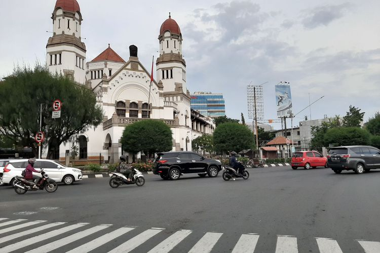

Sebagai kota terbesar sekaligus ibu kota Provinsi Jawa Tengah, Semarang adalah kota yang ramah bagi wisatawan.Kota yang terletak di pesisir utara ini menawarkan sejumlah destinasi wisata menarik dan mengagumkan.
Bagi saya Semarang merupakan kota kedua selain Jakarta, karena Kota Semarang merupakan tempat lahir ayah saya dan beberapa tahun yang lalu kita selalu mudik ke Kota Semarang ini.
Yang namanya mudik berwisata di Kota Semarang berasa kurang, karena banyak toko yang tutup, obyek wisata juga penuh wisatawan dan saya selalu mengunjungi saudara-saudara untuk berlebaran.
Saya niatkan mengunjungi Kota Semarang tidak waktu musim mudik, tetapi khusus hanya untuk mengunjungi Kota Semarang dan beberapa destinasi wisatanya.
Untuk menuju Semarang dari Jakarta tidak susah, bisa menggunakan kendaraan pribadi maupun kereta api dan pesawat.
Kebetulan saya mengunjungi Semarang menggunakan New Terios dari Jakarta. Tujuan ke sini membawa mobil agar banyak destinasi wisata bisa saya kunjungi.
Dari Jakarta menuju Semarang memakan waktu perjalanan darat 8 sampai 12 jam kalau jalan santai.
Paling enak memang melewati Jalur Pantura, karena jalannya sudah lebar.
Ditambah lagi, banyak tempat jajanan yang bisa kita singgahi kalau sedang lapar.